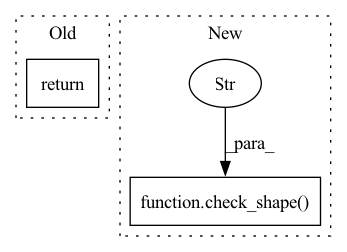

Pattern ID :7444
Before Change
text,
image = None
):
return image_embed
// decoder
After Change
def forward(self, text, image, *args, **kwargs):
b, device, img_size, = image.shape[0], image.device, self.image_size
check_shape( image, "b c h w" , h = img_size, w = img_size, c = self.channels)
times = torch.randint(0, self.num_timesteps, (b,), device = device, dtype = torch.long)
image_embed = self.get_image_embed(image)
text_cond = self.get_text_cond(text)In pattern: SUPERPATTERN
Frequency: 4
Non-data size: 2
Instances Fragment ID: 24634368
Project Name: lucidrains/dalle2-pytorch
Commit Name: 791d27326a894ce6d6873b77b51ce23e0cf53851
Time: 2022-04-13
Author: lucidrains@gmail.com
File Name: dalle2_pytorch/dalle2_pytorch.py
M Class Name: DiffusionPrior
N Class Name: DiffusionPrior
M Method Name: forward(3)
N Method Name: forward(1)
M Parent Class: nn.Module
N Parent Class: nn.Module
M File Name: dalle2_pytorch/dalle2_pytorch.py
N File Name: dalle2_pytorch/dalle2_pytorch.py
M Start Line: 288
M End Line: 288
N Start Line: 428
N End Line: 436
Before Change
cond_drop_prob = 0.2, // for the classifier free guidance
text_embed = None // in paper, text embedding was optional for conditioning decoder
):
return image
// main class
After Change
def forward(self, image, *args, **kwargs):
b, device, img_size, = image.shape[0], image.device, self.image_size
check_shape( image, "b c h w" , h = img_size, w = img_size, c = self.channels)
times = torch.randint(0, self.num_timesteps, (b,), device = device, dtype = torch.long)
image_embed = self.get_image_embed(image)
Fragment ID: 24634367
Project Name: lucidrains/dalle2-pytorch
Commit Name: 33d69d3859461f6cdc824a20b8d2fcfdb7e19549
Time: 2022-04-12
Author: lucidrains@gmail.com
File Name: dalle2_pytorch/dalle2_pytorch.py
M Class Name: Decoder
N Class Name: Decoder
M Method Name: forward(2)
N Method Name: forward(1)
M Parent Class: nn.Module
N Parent Class: nn.Module
M File Name: dalle2_pytorch/dalle2_pytorch.py
N File Name: dalle2_pytorch/dalle2_pytorch.py
M Start Line: 465
M End Line: 465
N Start Line: 618
N End Line: 625
Before Change
super().__init__()
def forward(self, x):
return x
class Teacher(nn.Module):
def __init__(After Change
hiddens = None
):
check_shape(proprio, "b d", d = self.proprio_dim)
check_shape( extero, "b n d" , n = self.num_legs, d = self.extero_dim)
latent_extero = self.extero_encoder(extero)
latent_extero = rearrange(latent_extero, "b ... -> b (...)")
Fragment ID: 24634366
Project Name: lucidrains/anymal-belief-state-encoder-decoder-pytorch
Commit Name: 31d37d8d81db1d32cbfae83f1e43a669e4c8d5ea
Time: 2022-04-17
Author: lucidrains@gmail.com
File Name: anymal_belief_state_encoder_decoder_pytorch/networks.py
M Class Name: Student
N Class Name: Student
M Method Name: forward(4)
N Method Name: forward(2)
M Parent Class: nn.Module
N Parent Class: nn.Module
M File Name: anymal_belief_state_encoder_decoder_pytorch/networks.py
N File Name: anymal_belief_state_encoder_decoder_pytorch/networks.py
M Start Line: 74
M End Line: 75
N Start Line: 119
N End Line: 157
Before Change
super().__init__()
def forward(self, x):
return x
After Change
privileged
):
check_shape(proprio, "b d", d = self.proprio_dim)
check_shape( extero, "b n d" , n = self.num_legs, d = self.extero_dim)
check_shape(privileged, "b d", d = self.privileged_dim)
latent_extero = self.extero_encoder(extero)
latent_privileged = self.privileged_encoder(privileged) Fragment ID: 24634365
Project Name: lucidrains/anymal-belief-state-encoder-decoder-pytorch
Commit Name: 0f75b66f3661a5caded2e4f5362a5dd1e794c124
Time: 2022-04-16
Author: lucidrains@gmail.com
File Name: anymal_belief_state_encoder_decoder_pytorch/networks.py
M Class Name: Teacher
N Class Name: Teacher
M Method Name: forward(4)
N Method Name: forward(2)
M Parent Class: nn.Module
N Parent Class: nn.Module
M File Name: anymal_belief_state_encoder_decoder_pytorch/networks.py
N File Name: anymal_belief_state_encoder_decoder_pytorch/networks.py
M Start Line: 80
M End Line: 80
N Start Line: 109
N End Line: 125